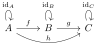
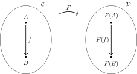

<!doctype html>
<html lang="en">

<head>
    <meta charset="utf-8">
    <meta name="author", content="Louis Dionne">
    <title>Catégories et métaprogrammation en C++</title>
    <link rel="stylesheet" href="css/reveal.min.css">
    <link rel="stylesheet" href="css/theme/default.css" id="theme">
    <link rel="stylesheet" href="lib/css/highlight/zenburn.css">
    <link rel="stylesheet" href="css/styles.css">
    <link rel="stylesheet" href="css/custom.css">
</head>

<body>
    <div class="reveal">
        <div class="slides">
            <section data-markdown=""
                     data-separator="^====+$"
                     data-vertical="^----+$"
                     data-notes="^Note:">
            <script type="text/template">

### Catégories et métaprogrammation en C++
#### Louis Dionne

====================

### Plan
- Survol du système de typage du C++
- Introduction à la métaprogrammation en C++
- Introduction aux catégories
- __Fusion__!

<!-- On définit les commandes MathJax dans la 2eme slide pour éviter de
     les voir se loader lorsqu'on commence la présentation. -->

$\newcommand{\cc}[1]{{\tt #1}}$
$\newcommand{\sub}[1]{_{#1}}$
$\newcommand{\tp}[1]{<#1>}$

$\newcommand{\C}{\mathcal{C}}$
$\newcommand{\D}{\mathcal{D}}$
$\newcommand{\P}{\mathcal{P}}$
$\newcommand{\ob}{\mathrm{ob}}$
$\newcommand{\id}{\mathrm{id}}$
$\newcommand{\hom}{\mathrm{hom}}$

$\newcommand{\Set}{\mathrm{Set}}$
$\newcommand{\Grp}{\mathrm{Grp}}$
$\newcommand{\Top}{\mathrm{Top}}$
$\newcommand{\Cxx}{\mathrm{C++}}$
$\newcommand{\Hana}{\mathrm{Hana}}$
$\newcommand{\Id}{\mathrm{Id}}$

==============================================================================

### Qu'est-ce qu'un type?
En gros, c'est un ensemble de valeurs

$\cc{int} := \\{ -32 767, \dots, 32 767 \\}$
$\cc{string} := \\{\text{toutes les chaînes de caractères}\\}$

Note:
Ça permet au compilateur de connaître la représentation des objets
et de les stocker dans l'ordinateur.

----

### On doit spécifier le type des objets qu'on manipule

__Maths__
$$n := 33 \in {\cc{unsigned\ int}}$$
$$s := Bonjour \in \cc{string}$$

__C++__
```cpp
int n = 33;
string s = "Bonjour";
```

----

### On peut définir des fonctions

__Maths__
$$
    \begin{matrix}
        \cc{f} : \cc{int} \to \cc{int} \\\\
                       x  \mapsto x^2
    \end{matrix}
$$

__C++__
```cpp
auto f(int x) -> int {
    return x * x;
}
```

Note:
Cette fonction est en fait mal définie, parce que e.g.
$32767^2 \not\in \cc{int}$.

----

### En C++, on peut aussi définir nos propres types

```cpp
struct Personne {
    string nom;
    int age;
};

int main() {
    Personne john = {"John", 30};
}
```

====================

### Pour la suite, on définira
$$
    Type := \\{ \text{tous les types } \cc{T} \text{ d'un programme fixé} \\}
$$

Note:
Pas de paradoxe, parce que cet ensemble est fini si on fixe un programme.

====================

### Les templates

## Sauve qui peut! <!-- .element: class="fragment" -->

====================

#### En fait, c'est juste une famille de types indexés sur les types

$$
    \cc{X} := \\{ \cc{X_T} = \cc{X\tp{T}} \\}\sub{\cc{T} \in Type}
$$

```cpp
template <typename T>
struct X {
    // ...
};

X<int> i = {...};
X<string> s = {...};
```

----

#### Par exemple

$$
    \cc{list} := \\{ \cc{list\tp{T}} \\}\sub{\cc{T} \in Type}
$$

```cpp
template <typename T>
struct list {
    // ...
};

list<int> ns = {0, 1, 2, 3, 4};
list<string> str = {"bonjour", "hello", "hola"};
```

====================

#### On a aussi des fonctions indexées sur les types

$$
    \cc{f} := \\{ \cc{f_T} : \cc{A\tp{T}} \to \cc{B\tp{T}} \\}\sub{\cc{T} \in Type}
$$

```cpp
template <typename T>
auto f(A<T> x) -> B<T> {
    // ...
}

A<int> x = {...};
A<string> y = {...};

f(x); // appelle f : A<int> -> B<int>
f(y); // appelle f : A<string> -> B<string>
```

----

#### Par exemple

$$
    \cc{at} := \\{ \cc{at_T} : \cc{int} \times \cc{list\tp{T}} \to \cc{T} \\}\sub{\cc{T} \in Type}
$$

```cpp
template <typename T>
T at(int n, list<T> xs) {
    // ...
}

list<int> ns = {0, 1, 2, 3, 4};
int trois = at(3, ns);

list<string> str = {"bonjour", "hello", "hola"};
string hello = at(1, str);
```

==============================================================================

### Et la métaprogrammation dans tout ça?
#### Une famille indexée est une fonction sous le couvert... <!-- .element: class="fragment" -->

====================

### Les templates sont donc des fonctions sur les types

$$
    \begin{matrix}
        \cc{X} := \\{ \cc{X\tp{T}} \\}\sub{\cc{T} \in Type}             \\\\
                        \simeq                                          \\\\
            \cc{X} : Type \to Type                                      \\\\
                    \cc{T} \to \cc{X\tp{T}}
    \end{matrix}
$$

----

### Observation analogue pour les fonctions

$$
    \begin{matrix}
        \cc{f} := \\{ \cc{f_T} : \cc{A\tp{T}} \to \cc{B\tp{T}} \\}\sub{\cc{T} \in Type} \\\\
                            \simeq                                                      \\\\
            \cc{f} : Type \to \left(\cc{A\tp{T}} \to \cc{B\tp{T}}\right)                \\\\
                    \cc{T} \mapsto \cc{f_T}
    \end{matrix}
$$

----

### Formalisation rigoureuse: types dépendants
#### Pas le temps :-( <!-- .element: class="fragment" -->

====================

### C'est ça qu'on manipule en métaprogrammation

====================

### Mais à quoi ça sert?

- Analyse dimensionnelle
- Introspection
- Optimisations de haut niveau
- Parallélisation automatique
- $\infty$ d'applications

==============================================================================

### La théorie des catégories

====================

### Une catégorie $\C$ est

1. #### une collection d'objets $\ob(\C)$
2. #### une collection de morphismes $\hom(\C)$
3. #### une loi de composition $\circ$

</img>

----

#### $\hom(A, B)$ est la collection des morphismes de $A$ vers $B$

====================

### $\C$ doit aussi respecter certaines règles

1. #### tout objet $X$ a un morphisme identité $\id_X$ de $X$ vers lui-même
2. #### les morphismes identité sont des éléments neutres de $\circ$
3. #### la composition $\circ$ est associative

====================

### Exemples

----

#### $\Set$

- $\ob(\Set) = \\{ \text{ensembles} \\}$
- $\hom(X, Y) = \\{ \text{fonctions } f : X \to Y \\}$
- $\circ = \text{composition usuelle}$

----

#### $\Grp$

- $\ob(\Grp) = \\{ \text{groupes} \\}$
- $\hom(X, Y) = \\{ \text{homomorphismes } f : X \to Y \\}$
- $\circ = \text{composition usuelle}$

----

#### $\Top$

- $\ob(\Top) = \\{ \text{espaces topologiques} \\}$
- $\hom(X, Y) = \\{ \text{applications continues } f : X \to Y \\}$
- $\circ = \text{composition usuelle}$

----

#### $\Cxx$

- $\ob(\Cxx) = Type$
- $\hom(\cc{X}, \cc{Y}) = \\{ \text{fonctions } \cc{f} : \cc{X} \to \cc{Y} \\}$
- $\circ = \text{composition usuelle}$

Note:
Il faut se limiter aux fonctions pures et qui terminent.
Il faut aussi oublier `void` & al, mais tout ça est justifiable.

====================

### Les foncteurs
#### transformations entre catégories

====================

### Un foncteur $F : \C \to \D$

1. #### associe à chaque objet $X \in \ob(\C)$ un objet $F(X) \in \ob(\D)$
2. #### associe à chaque morphisme $f : A \to B$ un morphisme $F(f) : F(A) \to F(B)$

</img>

----

### $F$ doit respecter les identités et la composition

1. $F(g \circ f) = F(g) \circ F(f)$
2. $F(\id_X) = \id\sub{F(X)}$

====================

### Exemples

----

#### Le foncteur identité $\Id : \C \to \C$

1. $\Id(X) = X$
2. $\Id(f : A \to B) = f : A \to B$

----

#### Le foncteur oubli $F : \Grp \to \Set$

1. $F(G) = G$
2. $F(f : G \to H) = f : G \to H$

<br>
(enlève la structure)

----

#### Le foncteur $\cc{list} : \Cxx \to \Cxx$

1. $\cc{list}(X) = \cc{list\tp{X}}$
2. $\cc{list}(\cc{f} : \cc{A} \to \cc{B}) = \cc{transform(-, f)}$

<br>
où

$$
    \begin{matrix}
        \cc{transform(-, f)} : \cc{list\tp{A}} \to \cc{list\tp{B}}                  \\\\
                               \cc{[x1, ..., xn]} \mapsto \cc{[f(x1), ..., f(xn)]}  \\\\
    \end{matrix}
$$

==============================================================================

### Le plat de résistance
#### Les types généralisés

----

#### D'abord, on définit le template $\cc{type}$

$$
    \cc{type} := \\{ \cc{type\tp{T}} \\}\sub{\cc{T} \in Type}
$$

```cpp
template <typename T>
struct type { /* rien */ };
```

----

#### Ensuite, on se dote d'un type symbolique $\cc{Type}$

```cpp
struct Type { /* rien */ };
```

----

#### Finalement, on définit la (méta)fonction suivante
$$
    \begin{matrix}
        \cc{gtype} : Type \to Type                                      \\\\
                    \cc{T} \mapsto \cc{T}                               \\\\
                    \cc{type\tp{T}} \mapsto \cc{Type}
    \end{matrix}
$$

----

#### On dira que $\cc{T}$ est un type généralisé si $\cc{T} \in \cc{gtype}(Type)$

====================

### La catégorie $\Hana$
#### (Hana = nom de la bibliothèque)

- $\ob(\Hana) = \cc{gtype}(Type) = \\{ \text{les types généralisés} \\}$
- $\hom(\cc{X}, \cc{Y}) = \\{ \text{fonctions } \cc{f} : \cc{X} \to \cc{Y} \\}$
- $\circ = \text{composition usuelle}$

----

#### Attention! On doit définir ceux-ci spécialement

- $\hom(\cc{Type}, \cc{Y}) = \\{ \text{templates } \cc{f} : \cc{type\tp{T}} \to \cc{Y} \\}$
- $\hom(\cc{X}, \cc{Type}) = \\{ \text{templates } \cc{f} : \cc{X} \to \cc{type\tp{U}} \\}$
- $\hom(\cc{Type}, \cc{Type}) = \\{ \text{templates } \cc{f} : \cc{type\tp{T}} \to \cc{type\tp{U}} \\}$

====================

### Et puis?
#### On vient de fusionner la métaprogrammation et la programmation <!-- .element class="fragment" -->

====================

### Applications

====================

### Foncteur $\cc{Tuple} : \Hana \to \Hana$

1. $X \mapsto \cc{Tuple\tp{X}}$
2. $\cc{f} : \cc{A} \to \cc{B} \mapsto \cc{transform(-, f)}$

<br>
où

$$
    \begin{matrix}
        \cc{transform(-, f)} : \cc{Tuple\tp{A}} \to \cc{Tuple\tp{B}}                \\\\
                               \cc{[x1, ..., xn]} \mapsto \cc{[f(x1), ..., f(xn)]}  \\\\
    \end{matrix}
$$

----

#### En quoi est-ce différent du foncteur $\cc{list}$?
### $\cc{Tuple}$ peut contenir des types! <!-- .element: class="fragment" -->

----

#### Par exemple

$$
    \begin{matrix}
        \cc{add\\_ptr} : &\cc{Type} \to \cc{Type}                       \\\\
                         &\cc{T} \mapsto \cc{T*}
    \end{matrix}
$$

```cpp
transform([type<int>{}, type<char>{}, type<float>{}], add_ptr)
    == [add_ptr(type<int>{}), add_ptr(type<char>{}), add_ptr(type<float>{})]
    == [type<int*>{}, type<char*>{}, type<float*>{}]
```

====================

### On a aussi

- Foncteurs $\cc{Maybe}$, $\cc{Lazy}$ et $\cc{Either}$
- Foncteurs applicatifs
- Monades
- Certains catamorphismes
- etc...

====================

### Le résultat?

### Expressivité, généralité et rectitude

----

### Constatez par vous-même

### Avant

```cpp
template<typename T, typename U>
using builtin_common_t = decltype(true?std::declval<T>():std::declval<U>());

template<typename T, typename U>
using lazy_builtin_common_t = m::defer<builtin_common_t, T, U>;

template<typename...Ts>
struct common_type { };

template<typename ...Ts>
using common_type_t = m::eval<common_type<Ts...>>;

template<typename T>
struct common_type<T> : std::decay<T> { };

template<typename T, typename U>
struct common_type<T, U>
  : m::if_c<(std::is_same<decay_t<T>, T>::value &&
             std::is_same<decay_t<U>, U>::value ),
      ml::let<lazy_builtin_common_t<T, U>>,
      common_type<decay_t<T>, decay_t<U>>
    >
{ };

template<typename T, typename U, typename... Vs>
struct common_type<T, U, Vs...>
  : ml::let<ml::fold<m::list<U, Vs...>, T, m::quote<common_type_t>>>
{ };
```

----

### Après

```cpp
template <typename T1, typename ...Tn>
auto common_type_impl = monadic_fold<Maybe>.left(tuple_t<Tn...>,
  type<std::decay_t<T1>>,
  sfinae([](auto t, auto u) -> decltype(type<
    std::decay_t<decltype(true ? traits::declval(t) : traits::declval(u))>
  >) { return {}; })
);

template <typename ...T>
struct common_type : decltype(common_type_impl<T...>) { };

template <typename ...T>
using common_type_t = typename common_type<T...>::type;
```

==============================================================================

## Merci
http://github.com/ldionne/hana <!-- .element class="fragment" -->

            </script>
            </section>
        </div>
    </div>


    <script src="lib/js/head.min.js"></script>
    <script src="js/reveal.min.js"></script>
    <script>
        Reveal.initialize({
            slideNumber: true,
            history: true,
            transition: 'slide',
            transitionSpeed: 'fast',

            dependencies: [
                { src: 'lib/js/classList.js', condition: function() { return !document.body.classList; } },
                { src: 'plugin/markdown/marked.js', condition: function() { return !!document.querySelector( '[data-markdown]' ); } },
                { src: 'plugin/markdown/markdown.js', condition: function() { return !!document.querySelector( '[data-markdown]' ); } },
                { src: 'plugin/highlight/highlight.js', async: true, callback: function() { hljs.initHighlightingOnLoad(); } },
                { src: 'plugin/notes/notes.js', async: true, condition: function() { return !!document.body.classList; } },
                { src: 'plugin/math/math.js', async: true }
            ]
        });
    </script>
</body>

</html>